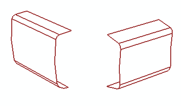

使用 NX 建模命令修复几何体
对于很多模型，您可以使用高级仿真抽取以及理想化命令来修改几何体。
有时，然而，您需要在建模中可以使用的工具，例如：
-
抽取工具并不用于创建复杂的几何特征，例如，如果您的几何体在导入外部 STEP 或者 IGES 几何体后丢失复杂面，可以使用建模工具重建
-
当使用抽取命令时，修改将不会保留在模型历史记录中，在使用建模命令时，CAD 特征以及修复支持历史记录
自由曲面建模通常用于修复几何体问题。自由曲面建模将使用3D 曲线以及曲面创建来创建使用标准特征难于构造的形状。

